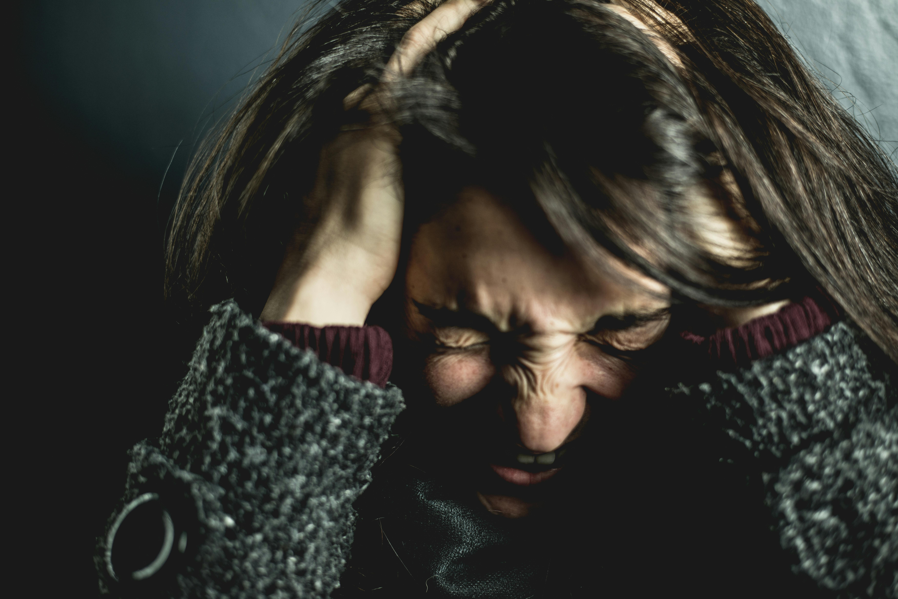
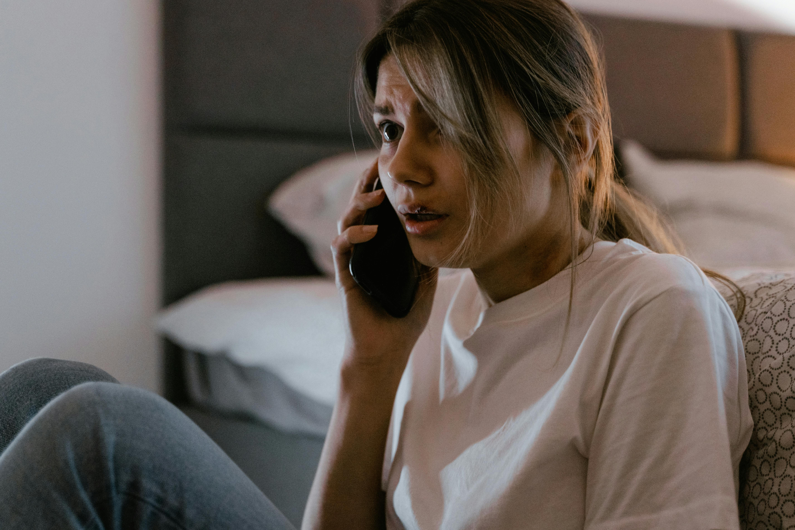

In this repo, we will be debating on whether or not someone should watch horror movies? Is it too scary? Is it too taboo? How do they make you feel?
YES you SHOULD!
Horror movies have always existed just on the edge of societal norms. They are an anxious artform that breaks boundaries and transcends simple ideas into elevated forms of expression. The foundation of horror movies is in the unity of emotional responses in the audience. It achieves this form of dramatic engagement through contrasting themes, subversion of expectations, and abject disgust. Horror movies are truly the quintessential form of dramatic catharsis and should be appreciated as such.
Reasons you should SCREAM
FEAR in SAFETY
REFLECT on your FEAR
FEAR TOGETHER
FEAR in SAFETY!
Horror movies allow you to feel fear in a safe environment. Fear is associated with a life or death scenario that triggers one’s instinctual fight or flight response. This fear is most often suppressed and repressed in everyday normality. No emotion should ever be suppressed and bottled up because it can have catastrophic results in the future. Horror movies offer an outlet for this repressed emotion by allowing you feel how you feel fear in normalcy creating a healthy outlet for your emotions
REFLECT on your FEAR
Horror movies make you reflect on your own fears that are buried in your subconscious. Deep intrapersonal reflections of the cause of anxieties and fears can elevate your sense of self. Watching horror movies engages your consciousness with your subconscious and makes you ask questions about why you fear something, the root cause of said fears, and how those subconscious fears affect your everyday life in ways that are not obvious. Therefore, watching horror movies are a good mental exercise that makes you a better person.
FEAR TOGETHER
Horror movies bring people together. The basis of this artform is to collect people together. It uses the concept of fear mongering panic amongst the masses to unify them into a state of expression and reflection with the usually present outrage and outbursts. Horror movies allow people to feel frightened together in a theater, on a couch, or in the seats of your car. They make people engage in conversation about why something was scary or why it wasn’t. The sense of community that horror movies bring forward is one that is self-constructive, self-reflective, and self-titillating. Therefore, horror movies are a necessity in good health and should be watched as often as possible to frequent this state of elevated existence.
Why you shouldn’t watch HORROR movies
Witnessing horrific scenes in horror movies can cause the viewer to be less sensitive to violence in general. Someone who watches horror movies may increase their threshold to stress/become scared. They may require increasingly horrifying visuals to become frightened. This desensitization may cause viewers to fail to respond appropriately in times of crises.

Watching horror movies may cause some viewers to experience increased levels of anxiety and paranoia. Intrusive thoughts and imagery can linger in someone’s mind long after watching a horror movie. This anxiety and paranoia can easily be avoided by not watching a horror movie.

Horror movies cause unnecessary distress in the viewer's life. Regular life is difficult enough by itself. By watching horror movies, a viewer may develop a trigger that they would not normally encounter in their daily lives.